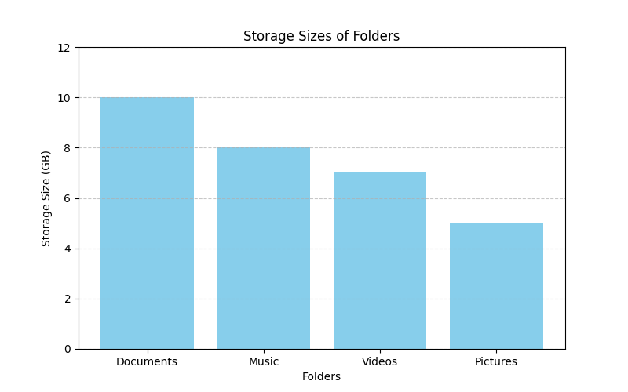
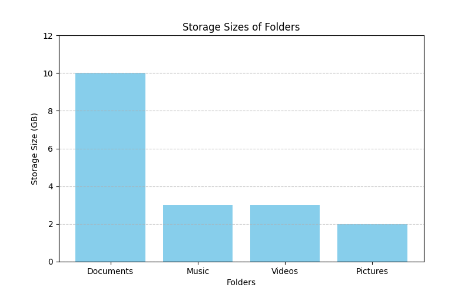

Cover image taken from
Summary: Here we will try creating a python program to analyze the storage and find out which files or folders is taking up most spaces.
I have a chromebook, very minimal specifications with 4GB of RAM and about 64GB of SSD storage. So, most of my data I keep in cloud. Since I have a very minimal storage here, I often run out of storage if I download too many apps, or I clone too many github repository. In these trying times, I start manually looking for what is taking up more spaces to see if I can reduce spaces by removing unwanted files. Since I know a bit about techs and stuffs, I thought it would be interesting to see if I can automate this daunting process of storage checking and going inside folders to see what is taking up spaces. Here’s a post to share what I could achieve for this.
And here goes a popular saying in the world of software automation 😩 .
Never spend 6 minutes doing something by hand when you can spend 6 hours failing to automate it.
du commandSo to build this storage application, I first looked around what things we already have. My chromebook runs a linux operating system. So I did a bit of a Google search, and voila! there’s a command du which can provide the file and the folder size of every file and folder in the current directory.
So I opened up my terminal in my home directory and typed the following.
du -s *
4 commands.txt
389168 Projects
289864 R
92 references.bib
1028 tmp
Basically the du command accepts the file path where we specify the * as an wildcard to consider all the files and folders, and the argument -s simply summarizes the result by summing up the files and nested folder sizes. The sizes in kilobytes are shown in the first column, and the second column is the file or folder names.
Now if I have about 100 folders in my home directory, the long list of 100 folders would come up here. I don’t want that. Since my goal is to find files which I can delete to save up space, and understand which files / folders are taking most spaces, may be I want to only list down the folders / files having large sizes. Fortunately, I know about pipes in the linux command, and here’s what I used.
sudo du -s * | sort -nr | head -10
Basically it does the following:
du -s * to calculate the sizes of the different files and folders within the current folder.sort -nr takes the output of step 1 and sorts the data in numerically reverse order (so the acronym -nr). In this way, now the folders / files with the largest size comes to the top.head -10 picks the top 10 values from step 2. So now, we have the top 10 largest files / folders in the current folder.The pipe command | simply chains the operations together and processes them one after another.
This du command was all and good, but I wanted to dig further. Now that I know which files / folders are taking most storage, I wanted to programmatically go inside these large folders and run the same du command recursively on them. That way, I can keep digging until I know precisely which files are taking up more storage and what I can delete / compress / reduce in size.
So, now the search begins on how to run a linux system command from python (I am using python because this is something I am really comfortable with). Turns out python has a builtin package called subprocess just for this purpose.
Here’s a bit of code that I wrote for this.
import subprocess
command = "sudo du -s --exclude=\".*\" * | sort -nr | head -10"
out = subprocess.run(command, cwd=dirpath, shell=True, capture_output=True)
if out.stderr.decode('utf-8') != '':
raise Exception(out.stderr)
else:
stdout = out.stdout.decode('utf-8')
Basically I am running the command by forking another subprocess from the main python process, capturing its output to get the data, and decoding it to be a string instead of the bytecode. Another thing I changed here is that I am excluding folders starting with . (e.g. .git), since those are usually config files and I shouldn’t really delete them.
Now that we have captured the output, I wanted to put it into a pandas dataframe (well, because you know, we data scientist guys always love to work with dataframes 😬 ). So I splitted up the output string by \n (newline character) to form the rows, and then each row I split by \t to get the column values. Finally, I put the entire thing in a function.
import pandas as pd
import subprocess
# the function to run du command and capture its output
def run_check_storage_command(dirpath):
print(f"Checking file details at {dirpath}")
command = "sudo du -s --exclude=\".*\" * | sort -nr | head -10"
out = subprocess.run(command, cwd=dirpath, shell=True, capture_output=True)
if out.stderr.decode('utf-8') != '':
raise Exception(out.stderr)
else:
stdout = out.stdout.decode('utf-8')
rows = stdout.split("\n")
data = {'Storage': [], 'Item': []} # a blank data placeholder
for row in rows:
cols = row.split('\t')
if len(cols) == 2:
data['Storage'].append(int(cols[0])) # now inside the dataframe, put the storage
data['Item'].append(cols[1]) # and the file / folder item name
df = pd.DataFrame(data)
return df
So now that we have the du command setup moved over to the python, its time to recursively call the same command to the nested folders inside the current folder, and continue like this. Finally, we collect all the file information and put them back together to see which files are taking up more space.
import os
def fetch_recursive_storage(rootpath):
curdf = run_check_storage_command(rootpath)
dflist = [] # keep a placeholder for storing the data from nested folders
for index, row in curdf.iterrows():
subpath = os.path.join(rootpath, row['Item']) # this is the nested folder / file path
if os.path.isdir(subpath):
# so the current path considered is actually a folder
subdf = fetch_recursive_storage(subpath) # recursively call the same function
dflist.append(subdf)
return pd.concat([curdf] + dflist)
The above code snippet does the following:
The above code works, but looks very slow. To see this, imagine we have 10 folders at the first level. In the next level, for each of these 10 folders, we will have another 10 folders (the largest ones). So in total, at the level 2 there are 100 folders. Now in each of these, we are again looking for 10 folders, so at level 3, we end up having 1000 folders. This number is hence increasing exponentially, and our above code is aimlessly searching for largest files in all these folders combined.
It is obvious at this point is that we want to limit the recursion. Instead of going inside all 10 directories all the time, we might want to explore the ones which have very large sizes. To address the exponential increase in the number of directories explored during recursion, we introduce a method to limit the recursion depth using the Elbow Method. This technique is commonly employed in data science to determine the optimal number of clusters in a dataset, but here we adapt it to help identify significant directories worth exploring during recursion.
Before calling the loop for the recursion, we thus use the following code to limit the number of nested folder recursion, shortening curdf.
# check the elbow
curdf['Diff Storage'] = curdf['Storage'].diff().abs().fillna(0)
threshold = curdf['Diff Storage'].median()
index = np.where(curdf['Diff Storage'] > (threshold * (1 + tolerance)))[0]
if index.shape[0] > 0:
# there is a positive index, only check those entries in a nested way
curdf = curdf.iloc[:(index[0] + 1)]
In the above snippet, we calculate the absolute differences in storage sizes between consecutive items (‘Diff Storage’). By finding the median of these differences, we establish a threshold. Any directory with a storage size difference above a tolerance level (say 30-50%) of this threshold is considered significant, and hence would be considered. In none of the storage size difference is significant, then it means all folders have a similar size and hence all folders should be explored.
To illustrate this, consider this example. Suppose you have 4 folders.
Start by plotting these points in a graph.

As you can see, the drops in file size is linear and there is no significant advantage in choosing to explore only the first 1 or 2 folders. In this case, our size differences would be (10-8) = 2 GB, 1GB and 2GB, so all differences are more or less in the same range.
On the other hand, imagine you have the 4 folders with sizes

Clearly, it makes sense to explore only the Documents folder first because that has the highest potential for saving large amount of storage space. In this case, the size difference is 7GB, 0GB, and 1GB. Clearly, 7GB is significantly more than the median 1GB.
Finally, since we are using dataframe object, we start to make use of its features like map method to create some depth parameters and the file counts inside a folder. Just to demonstrate how powerful this recursion technique can be to collect storage related information in your computer.
Here is the complete final code.
# now do this recursively
def fetch_recursive_storage(rootpath, tolerance = 0.1, depth = 1):
# this function gets called if rootpath is a directory
curdf = run_check_storage_command(rootpath)
curdf['Depth'] = depth # nested depth of the item
curdf['ItemPath'] = curdf['Item'].map(lambda x: os.path.join(rootpath, x)) # absolute path to the item
curdf['isDirectory'] = curdf['ItemPath'].map(lambda x: os.path.isdir(x) ) # is the item a folder
if curdf.shape[0] > 0:
# check the elbow
curdf['Diff Storage'] = curdf['Storage'].diff().abs().fillna(0)
threshold = curdf['Diff Storage'].median()
index = np.where(curdf['Diff Storage'] > (threshold * (1 + tolerance)))[0]
if index.shape[0] > 0:
# there is a positive index, only check those entries in nested way
curdf = curdf.iloc[:(index[0] + 1)]
dflist = [] # empty array to hold the dataframe details
filecount = []
nested_filecount = []
for index, row in curdf.iterrows():
if row['isDirectory']:
subdf = fetch_recursive_storage(row['ItemPath'], tolerance, depth + 1)
dflist.append(subdf)
filecount.append((subdf['isDirectory'] == False).sum())
nested_filecount.append((subdf['Nested File Count']).sum())
else:
filecount.append(0)
nested_filecount.append(1)
# all the child folders are properly checked
curdf['File Count'] = np.array(filecount)
curdf['Nested File Count'] = np.array(nested_filecount)
return pd.concat([curdf] + dflist)
Since the sizes are obtained in kilobytes we might want to convert them into a more human readable format. Here’s a short function that does this.
def sizeof_fmt(num, suffix="B"):
for unit in ("", "Ki", "Mi", "Gi"):
if abs(num) < 1024.0:
return f"{num:3.1f}{unit}{suffix}"
num /= 1024.0
return f"{num:.1f}Yi{suffix}"
Finally, I put these into a python file and run the following.
df = fetch_recursive_storage(Path.home())
df['Storage (Human)'] = df['Storage'].map(lambda x: sizeof_fmt(x * 1024))
df = df.loc[df['isDirectory'] == False] # only look for the files
df = df.sort_values(['Storage', 'Depth'], ascending=[False, False])
df = df[['ItemPath', 'Item', 'isDirectory', 'Storage (Human)', 'File Count', 'Nested File Count', 'Depth']]
df = df.reset_index(drop = True)
print(df.head(10)) # print the top 10 files taking large storage
Here’s the result that I get when I run this in my computer.
ItemPath Item isDirectory Storage (Human) File Count Nested File Count Depth
0 /home/subroy13/R/x86_64-pc-linux-gnu-library/4... vroom.so False 22.4MiB 0 1 6
1 /home/subroy13/R/x86_64-pc-linux-gnu-library/4... ragg.so False 21.2MiB 0 1 6
2 /home/subroy13/Projects/statwizard/docs/aboutm... demo.mp4 False 17.8MiB 0 1 6
3 /home/subroy13/Projects/statwizard/docs/aboutm... Dissertation Report.pdf False 10.7MiB 0 1 6
4 /home/subroy13/Projects/statwizard/docs/aboutm... Presentation Part II.pdf False 4.4MiB 0 1 6
5 /home/subroy13/Projects/statwizard/docs/posts/... figure-4.gif False 3.1MiB 0 1 6
6 /home/subroy13/Projects/statwizard/docs/posts/... figure-2.gif False 2.6MiB 0 1 6
7 /home/subroy13/Projects/statwizard/docs/posts/... episode-2001.gif False 1.3MiB 0 1 7
8 /home/subroy13/Projects/statwizard/docs/posts/... episode-1.gif False 1.3MiB 0 1 7
...
In summary, figuring out how to manage storage on my basic Chromebook using programming was a cool way to solve a common problem. This shows that even simple coding can help make daily tasks easier.
The main idea here is that programming isn’t just for complex stuff—it can also make simple, everyday things better. If you’ve also used programming to solve everyday problems, I’d love to hear about it! This is an invitation to share your experiences, so we can all learn from each other and make life a bit simpler. Together, we build a community where coding isn’t just for experts but something anyone can use to make their daily routine smoother.